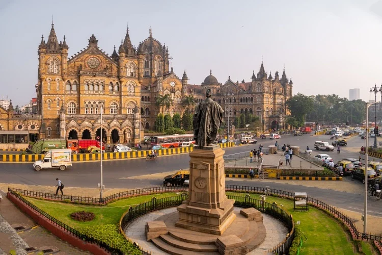

Mumbai, the capital city, is known for its bustling life and iconic landmarks.
- Gateway of India: Historic monument overlooking the Arabian Sea.
- Marine Drive: A scenic promenade along the coast.
- CSMT: An architectural marvel and UNESCO site.

Mumbai, the capital city, is known for its bustling life and iconic landmarks.

Pune is renowned for its rich history and educational institutions.